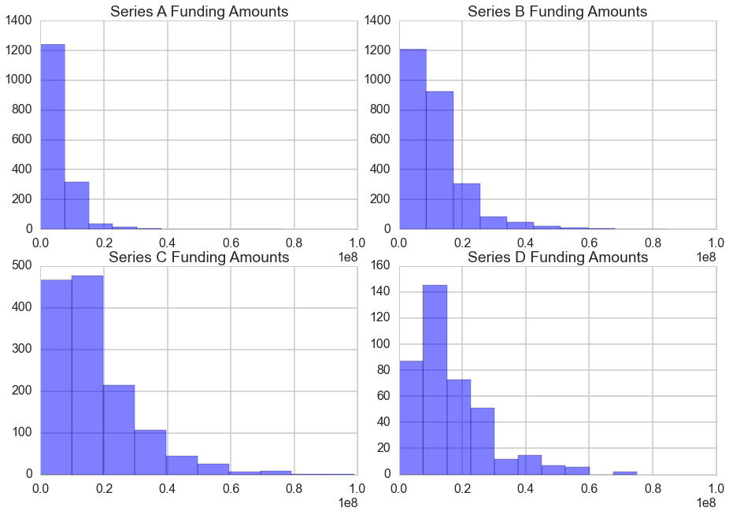
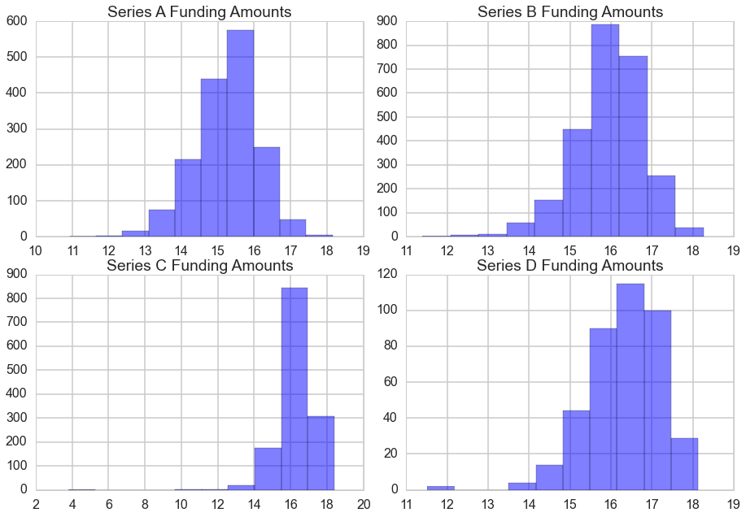
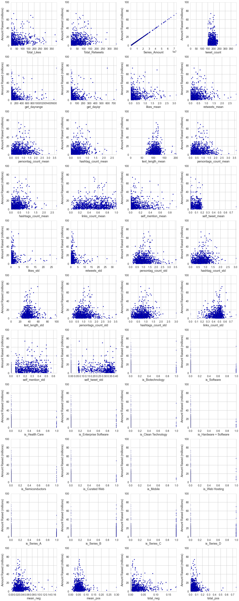
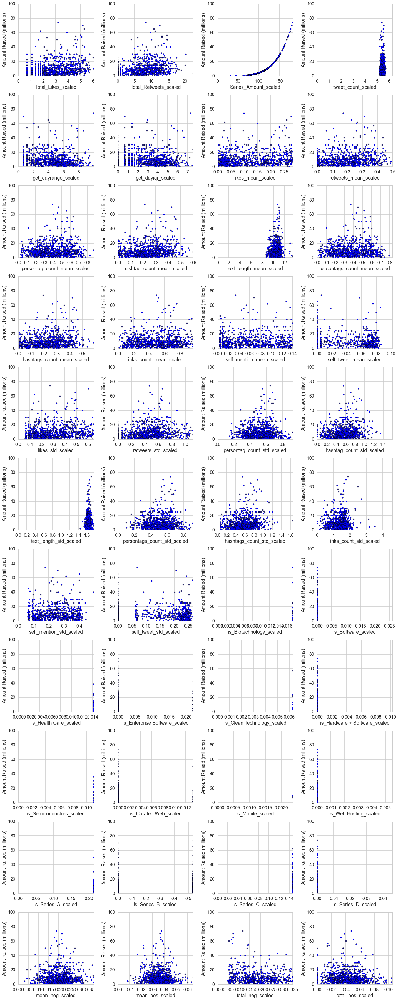
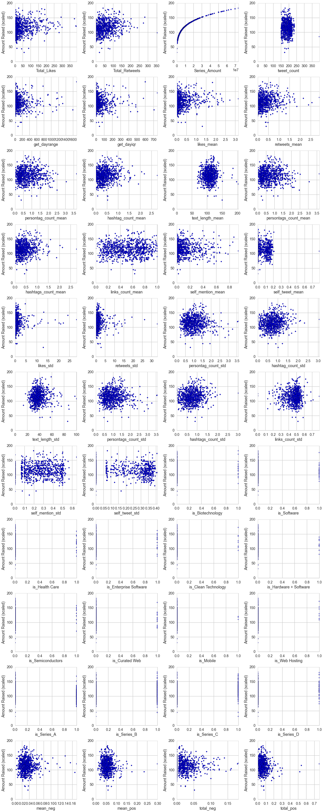
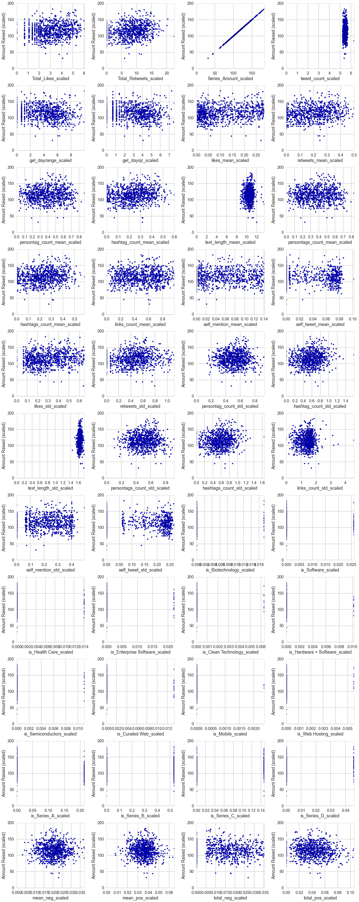
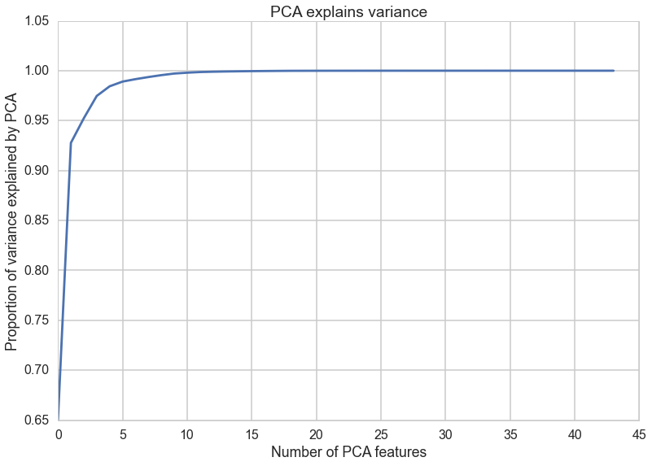

Welcome to GitHub Pages.
The web site should effectively summarize the main results of your project and tell a story. Consider your audience (the site is public) and keep the level of discussion at the appropriate level. Your iPython process book and data should be linked to the web site as well, either using a zip file, github, bitbucket, or another code hosting site. Also embed your main visualizations and your screencast in your website.
Overview
Motivation and Goals
For the average public relations officer, manipulating the media is a standby. Social media is no exception, with sites like Twitter, Instagram, and Facebook now regular tools in a publicist's arsenal. Raising brand awareness and positive sentiment may be especially important before important events like a startup's Series B.
We propose to test the converse: Before financing rounds, might there be an abnormal amount of PR activity? Can we predict details on events like financing rounds based on mentions of a company on social media platforms like Twitter? Or is social media a noisy, meaningless indicator?
This project aims to use data analysis and predictive analytics to find correlations between tweets and startup funding rounds in order to shed light on potential importance of tweets and social media in general as indicators of startup success. Through a variety of models, we show that there is unfortunately minimal relationship between tweets and startup funding.
Data Collection
Startup Financials
We obtained startup funding round data (Series A, B, C, D, E, etc. with amounts raised and valuations) from AngelList and Crunchbase by scraping their search pages.
Tweets
We obtained tweet data (text, time, location, likes/retweets, etc.) by scraping the Twitter search page. This necessitated significant cleaning to be usable. Although Twitter has an API, it provides insufficient and outdated information.
Miscellaneous Processing
The majority of our tweets were non-English, so we chose to translate them via Microsoft Translator in order to have all-English results that would work globally. We took the nouns and adjectives from tweets, reducing sentences into words. We then converted words into their basic form, for example: "walk", "walking", "walks", "walked" =>"walk". Each tweet is 140 characters at most, so we don't need to distinguish between sentences within tweets.
Analysis
Sentiment Analysis
We used a sentiment dictionary grade the positivity, negativity, and objectivity of our words. “Positive" or “negative" words have positivity score>0.5 or negativity score>0.5, respectively. For each tweet, we took the average positivity and negativity score over all tokens, then summed up the total "positive" words and total "negative" words (usually 0,1, and rarely 2) in the tweet. To summarize, we have four features from sentiment analysis: average positivity, average negativity, positive count, negative count. For each company, funding round pair, we then take the average of these features for all their tweets.
Startup Financial Analysis
After preliminary analysis, we determined the average Series A funding round is approximately $6 million, the average Series B funding round is $11 million, the average Series C funding round is $16 million, and the average Series D funding round is around $17 million dollars. However, there is significant variance in the amount of money each company raises. Graphing it on a scale from 0 to $100 million, we see all Series are very much skewed right.
However, once we plot the log of the data instead, we are able to get a distribution that looks much less skewed and that we can treat as similar to normal.
Data Exploration and Feature Selection
Naive Predictions
Based off just the Series data, we're able to predict funding round amounts naively by predicting the average Series amount. We find the root mean squared error to be approximately $10 million, a baseline prediction we'll use to compare to our later, more complex predictions.
Correlation Analysis
In this analysis, we only considered the 1200 startups that had more than 150 tweets and valid dates. With and without scaling both parameters, our results were mostly inconclusive. While some scaled v. scaled graphs displayed homoscedastic behavior (equal variance across features), their slopes tended to be very close to 0 and not at all linear.
We plotted the unscaled 'Amount Raised' against all unscaled numerical features, and found no linear correlations.
We then plotted the unscaled 'Amount Raised' against all numerical features normalized using boxcox transformation, and again found no linear correlations.
We did not find linear correlations for scaled 'Amount Raised' against unscaled features either.
We did find some homoskedastic correlations for scaled 'Amount Raised' against scaled features', but unfortunately these slopes were flat.
From our correlation analysis, we infer that using SVR may be a better method for predictive modeling than linear regression.
Principal Component Analysis
Principal Component Analysis (PCA) tries to isolate a handful of linear combinations of features that "explain" most variances in the data. This is a descriptive, not predictive, technique, and it operates on the whole dataset without the training/testing division. Moreover, PCA is more informative if all features are suitably normalized, so no single feature can dominate the total variance. We then use Box Cox transformation on each column (the library chooses an appropriate parameter, different for each column, to make the resulting transformation approximately Normal.) The exception is the funding raised, which we use the log transformation (which is also a special case of Box Cox). This is justified because our plot shows that log(funding) looks Normal, and when we predict log(funding), reversing the function to get funding is more expedient. Our PCA shows that only a few (aggregated) features explain most of the variance. 3 top features explain 95% of the variance, while 5 top features explain 98% of the variance.  The python notebook for PCA is here.
Predictive Modeling
Linear Regression
Support Vector Regression (SVR)
We suspect that the problem is not linear, so we turn to Support Vector Regression (SVR). We split the data into the training data and the testing data, standardize the numerical features of each of the two datasets separately. We try three choices of kernels - rbf, linear and polynomial. For each choice of kernal, we use GridSearchCV with 5-fold cross validation to find the optimal parameters of the predictor over a reasonable (pre-determined) range of parameters. We then fit the predictor to the training data, predict it on the test data, and evaluate it by computing RMSE on log(funding). We found that rbf predictor with C=100 and gamma=0.01 is the best, with RMSE around 1. This result is comparable to linear regression. The python notebook for SVR is here..
Filler text
You can @mention a GitHub username to generate a link to their profile. The resulting <a> element will link to the contributor’s GitHub Profile. For example: In 2007, Chris Wanstrath (@defunkt), PJ Hyett (@pjhyett), and Tom Preston-Werner (@mojombo) founded GitHub. But then the Touhous came. Why is guessing regression values so OP -Roger -Kevin
Support or Contact
Having trouble understanding Startup-Analysis? Check out the code and implementations directly.